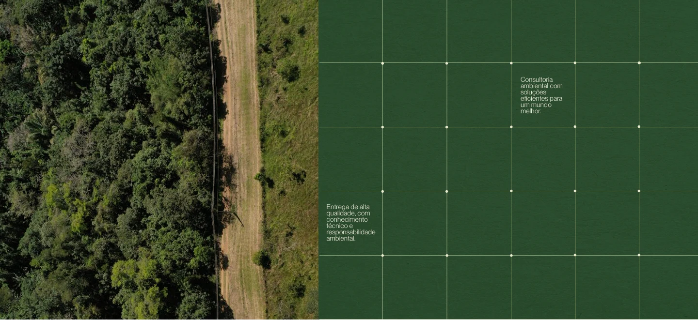
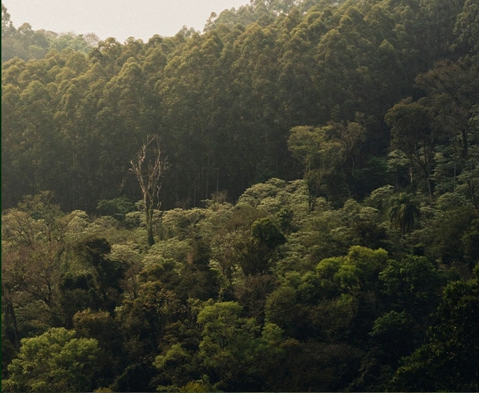
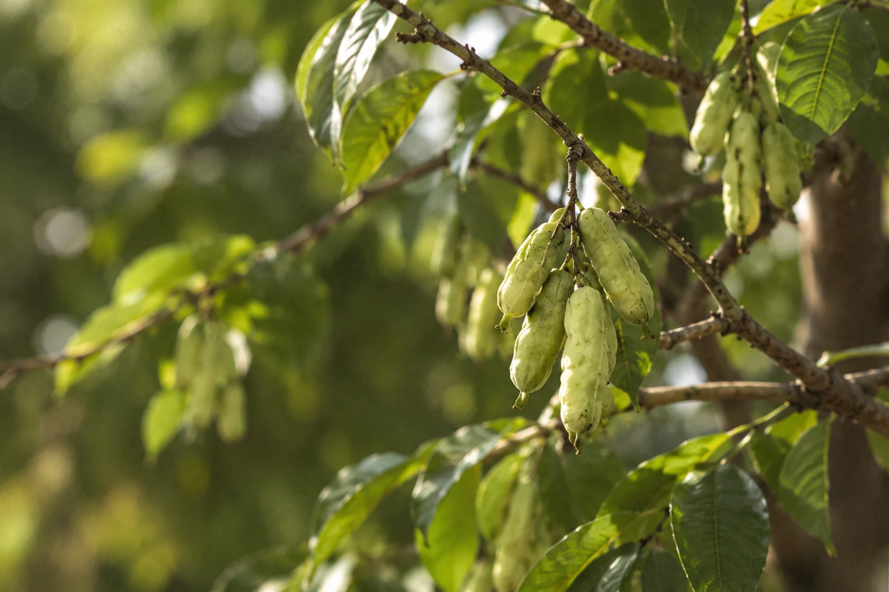

Ingá Florestal — consultoria ambiental com soluções eficientes para um mundo melhor

Entrega de alta qualidade, com conhecimento técnico e responsabilidade ambiental.
Consultoria ambiental com soluções eficientes para um mundo melhor.

A Ingá é uma empresa de soluções ambientais que integra conhecimento técnico e alta qualidade nos seus projetos, atendendo empresas, empreendedores e proprietários rurais em todo o Brasil, com atuação especial na Mata Atlântica.
Fale com a genteA Ingá une leitura técnica de paisagem e execução em campo, do diagnóstico ao plantio, em todo o território brasileiro.
- Mais de 120 hectares
- de áreas em estudos florísticos, principalmente no Rio de Janeiro e na Bahia
- Mais de 25 hectares
- de áreas restauradas no estado do Rio de Janeiro
- Mais de 33 mil
- mudas de espécies nativas da Mata Atlântica plantadas em campo

Trabalhamos com viveiros que, somados, possuem a maior diversidade de espécies do Estado do Rio de Janeiro.
Mais de 350 espécies
Restauração
e recuperação
ambiental
- Restauração ecológica (reflorestamento)
- Recuperação de nascentes
A Ingá Florestal recupera nascentes e áreas degradadas, elaborando e executando projetos de restauração ecológica, com alta diversidade de espécies nativas, alto índice de aprovação pelos órgãos ambientais e acompanhamento após o plantio.
Atendemos demandas como:Compensações ambientais exigidas pelos órgãos ambientais, em razão de supressão de vegetação ou de passivos ambientais.
Recuperação de nascentes e de áreas de preservação permanente.
Restauração voluntária, para quem quer devolver floresta à sua propriedade.


Inventário
e Vegetação
- Inventários florestais
- Caracterização de vegetação
Nossos estudos de vegetação reúnem todas as informações técnicas necessárias sobre uma população florestal, seja para supressão de vegetação, acompanhamento do seu crescimento ou caracterização da vegetação para licenciamentos. O objetivo é reunir informações que auxiliem a tomada de decisão.


Licenciamento
e viabilidade
ambiental
- Licenciamento ambiental
- Estudo de viabilidade ambiental
Licenciamento ambiental é a autorização feita pelo órgão ambiental competente que permite o funcionamento de atividades que possam causar impacto ao meio ambiente, podendo acontecer em uma residência particular, em loteamentos, para atividades industriais e comerciais. A Ingá acompanha todo o ciclo: estudo prévio, licenciamento e pós-licenciamento, incluindo o cumprimento de condicionantes e compensações ambientais.
O estudo de viabilidade ambiental ajuda a entender o que determinada área permite antes da compra de uma propriedade ou empreendimento. Coletamos e analisamos dados do território, projetamos cenários e apontamos etapas e dificuldades, identificando áreas não edificáveis por topografia, geomorfologia, risco de deslizamento, áreas de preservação permanente, locais passíveis de intervenção, hidrografia, vegetação e zoneamento municipal e ambiental.


Diagnóstico
territorial
- Mapas
- Topografia
- Plano Terra Certa
O diagnóstico territorial da Ingá serve de base para planejamento territorial e tomada de decisão mais assertiva.
Mapas ambientais: áreas de preservação permanente, hidrografia e vegetação.
Mapas de diagnóstico: drenagem, incidência solar, altimetria, entre outros.
Mapas de uso e ocupação do solo: classificação do uso e da ocupação da área estudada.
Mapas de zoneamento: zoneamento municipal e ambiental.
Plano Terra Certa: regularização do imóvel rural transformando um conjunto disperso de cadastros e documentos em uma solução simples e tecnicamente robusta.


Perícias e
laudos técnicos
- Perícia ambiental
- Laudos técnicos e pareceres
A Ingá realiza perícias ambientais, laudos técnicos e pareceres, com embasamento técnico e responsabilidade ambiental, para esclarecer a situação ambiental de uma área, e apoiar processos e exigências dos órgãos ambientais.
Quem confia
no nosso trabalho


Contato
contato.ingaflorestal@gmail.com(24) 99295-8608Estrada de Secretário, 921, Pedro do Rio
Petrópolis, RJ · CEP 25755-352
